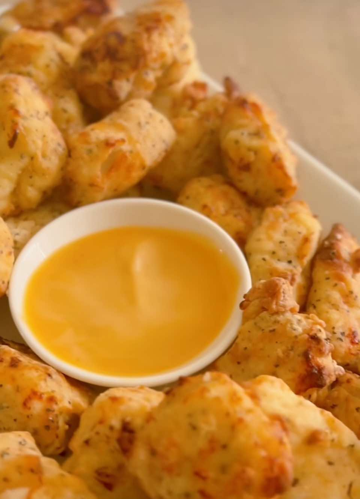

Air Fryer Chick-Fil-A Nuggets!!
Air FryerChicken
PrepPT45M
CookPT8M

Ingredients
- 1 cup dill pickle juice
- 1 lb boneless skinless chicken breasts, cut into
- pieces about 1 inch in size
- 3 tbsp powdered sugar
- 1 egg
- 1 cup milk
- 2 tsp salt
- 1½ cups flour
- 1½ tsp pepper
- ½ tsp paprika
- Olive oil spritz
Directions
- Add chicken chunks to pickle juice and marinate in the refrigerator for about 30 minutes.
- Whisk milk and egg together and set aside.
- Combine the dry ingredients and stir set aside.
- Preheat air fryer to 370
- Remove the chicken from the refrigerator, drain and place each into the dry mixture, to the liquid mixture, and back to the dry making sure it is well coated, making sure to shake off excess
- Cook in a single layer of chicken for 8 minutes or until golden brown, flipping, and spritzing with olive oil at the halfway mark
- Serve with your favorite dipping sauce and enjoy!!
Notes
You can easily make these copycat chick-fi-a nuggets stove top too, just follow everything as above but then deep fry in vegetable or peanut oil.
Source
Instagram lifebyleanna
This page includes Schema.org Recipe structured data for recipe importers.